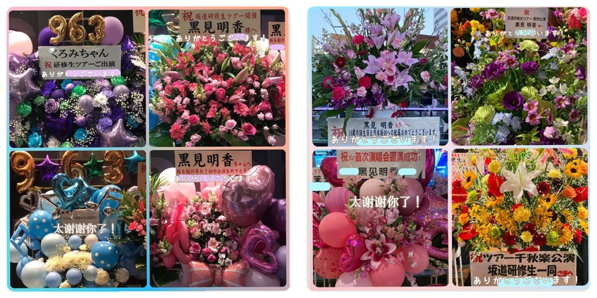

2020/0427Monみなさま 初めまして☺︎ 新４期生です。黒見明香
みなさま 初めまして。
ブログを読んで下さってありがとうございます♪
乃木坂46に新たに加わらせて頂いた、新４期生の黒見明香と申します。
誰・・・？？ と思われた方も多いことと思います。
すこーしだけ自己紹介させてくださいませ☺︎
♪:*:･･:*:･･:*:･･:*:･･:*:･･:*:･♪:*:･･:*:･･:*:･･:*:･･:*:･･:*:･♪
黒見 明香（くろみ はるか）
2004年1月19日生まれ 16才
香港生まれ・東京都出身です
黒見 明香（くろみ はるか）
2004年1月19日生まれ 16才
香港生まれ・東京都出身です
黒見ちゃん・くろみん と呼ばれています
他には・・・3の倍数9・6・3(くろみ)
くろみつきなこ、ハッピーベイビーなどなど笑
実は おしゃべり好きで、お顔を覚えるのが得意です☺︎
♪:*:･･:*:･･:*:･･:*:･･:*:･･:*:･♪:*:･･:*:･･:*:･･:*:･･:*:･･:*:･♪

乃木坂46を大好きになったきっかけは、中学２年生の合宿で女の子全員で「制服のマネキン」を踊ったことです。
翌年のオーディションセミナーの時に 秋元真夏さん♡鈴木絢音さん♡久保史緒里さんがキラキラした美しい笑顔で、乃木坂46の大切なお話を聞かせて下さいました✩︎⡱
翌年のオーディションセミナーの時に 秋元真夏さん♡鈴木絢音さん♡久保史緒里さんがキラキラした美しい笑顔で、乃木坂46の大切なお話を聞かせて下さいました✩︎⡱
♬ *。♩*。♬
私は運動神経が悪く、かけっこは毎年ビリ、逆上がりもできず、自転車に乗れず、騎馬戦では囮として学年中から追っかけられたり、給食のパンが詰まって保健室にお世話になったり...と、いつも"まわりの方に迷惑をかけないように>_<" と思っていました。
中学校に上がってもカタカナが怪しく「オケーストラァ」「テェッシュー」と書いて、学校で『バレないよう気をつけてね(´•ω•; )』と心配されたりしていました。
♬ *。♩*。♬
苦手な事を恥ずかしく、申し訳なく思って隠してたけれど、秋元真夏さんの「得意なことも、苦手なことも武器になる」というお話を聞いて本当に驚きました！
そのお話が私に勇気を与えてくれ、オーディションを受けるきっかけとなりました。
＊
こうして大好きな乃木坂46のファンの皆さまに、拙いブログを読んで頂ける日がくるなんて...今もとても信じられません。
♪:*:･･:*:･･:*:･･:*:･･:*:･･:*:･♪:*:･･:*:･･:*:･･:*:･･:*:･･:*:･♪

25thシングル「しあわせの保護色」の特典映像として収録していただいた、初めての個人PV「乃木坂功夫美少女 明香」撮影時の、お腹いっぱい胸いっぱいなお昼の一コマです。
♪:*:･･:*:･･:*:･･:*:･･:*:･･:*:･♪:*:･･:*:･･:*:･･:*:･･:*:･･:*:･♪
坂道研修生として活動させて頂き、ありがたくも沢山のことを学ばせて頂きました。
Overtureがスタートして、膝がガクガク震えるのを耐えながら、手をぎゅっと繫いでステージに立っていました。
何もない私にも、声援を送って下さり、手作りのボード、タオルやうちわを振って下さり、みなさんの顔が「大丈夫！頑張れ！」と伝えて下さっているのが感じられて、弱気になりそうな私の背中を押してくれました。
何もない私にも、声援を送って下さり、手作りのボード、タオルやうちわを振って下さり、みなさんの顔が「大丈夫！頑張れ！」と伝えて下さっているのが感じられて、弱気になりそうな私の背中を押してくれました。
乃木坂46・欅坂46・日向坂46のサイリウムが混ざった光景は一生忘れられないです✩︎⡱
いま、15人それぞれの坂を登り始めました。
勇気を出してオーディションを受けた全ての女の子の想いも胸に、一緒に背負っていきたいです。
いま、15人それぞれの坂を登り始めました。
勇気を出してオーディションを受けた全ての女の子の想いも胸に、一緒に背負っていきたいです。
♪:*:･･:*:･･:*:･･:*:･･:*:･･:*:･♪:*:･･:*:･･:*:･･:*:･･:*:･･:*:･♪
SHOWROOMや研修生期間と、中学生の頃からあたたかく見守り心を支えて下さった皆さま、やっと"ありがとう"が伝えられることが本当に嬉しいです>_<
今日初めて知ったよ、という乃木坂を支えて下さっている先輩ファンの皆さま♪
至らない所ばかりですが、たくさん学ばせて頂いて、少しでもグループに役立てる人に成長できるよう一生懸命に努めます。これからどうぞよろしくお願いします☺︎

⑅୨୧⑅ 研修生ツアー、BIRTHDAY LIVEの名古屋ドームにまで、配属のお祝いや誕生日まで覚えててくださり、こんな温かなお花を贈って下さるなんて畏れ多く...優しさで胸がいっぱいです( ;ᴗ; )
♬ *。♩*。♬
また外国からも読んでくださる皆さまもありがとうございます。
言葉も絵も下手すぎて恥ずかしいですが、想いが伝えられたらいいなぁ...

♪:*:･･:*:･･:*:･･:*:･･:*:･･:*:･♪:*:･･:*:･･:*:･･:*:･･:*:･･:*:･♪
今、みなさんが一日一日が大変な時に、
これから 心がホッと安らげるようなブログが書けたらいいな、
と思っています(*´-`)
どうぞお身体大切に お過ごしくださいませ✩︎⡱
＊
長々とごめんなさい。明日は大好きな佐藤璃果ちゃんですよー！
読んでくださり、本当にありがとうございます☺︎
読んでくださり、本当にありがとうございます☺︎

自撮りとメイク練習中でごめんなさい、前髪が伸びてしまいヘアスタイル悩み中です;;
またねヾ(･ω･*)
くろみはるか☺︎
☆ 本日のあなたのラッキーナンバー：３
♪:*:･･:*:･･:*:･･:*:･･:*:･･:*:･♪:*:･･:*:･･:*:･･:*:･･:*:･･:*:･♪
2020/04/27 20:24
コメント(989)
かわいい
ブログ待ってました！
個人PVめっちゃよかった！
これから楽しみにしてます！
質問
◎好きな先輩はいますか？
◎ハマってることはありますか？
個人PVめっちゃよかった！
これから楽しみにしてます！
質問
◎好きな先輩はいますか？
◎ハマってることはありますか？
これからよろしくお願いします！
くろみちゃん、坂道研修生ライブからこの日を待っていました。ライブでの堂々としたパフォーマンスに感動したのです。今後の活躍を期待しています。
可愛いな！同い年だからよろしく！
ブログ更新ありがとう。今日からバッチリコメ残すね。毎回チェックするね。またコメ残すね。ナオッチ
くろみちゃん初のリレーブログ楽しみにしてたよ ありがとう！
くろみちゃんの個人PV見たときに一目惚れしました
実は私もブルース・リーさん好きなんです
なので、握手会でその話ができたらいいなと思います！
これからも頑張ってください！
５日後のブログも楽しみにしてます！
くろみちゃんの個人PV見たときに一目惚れしました
実は私もブルース・リーさん好きなんです
なので、握手会でその話ができたらいいなと思います！
これからも頑張ってください！
５日後のブログも楽しみにしてます！
初ブログおめでとう！
初めまして！
黑見ちゃん、乃木坂に入ってくれてありがとう。
感謝你記得我們！
希望你永遠開心快樂、一起頑張ってね
すごく感動しました！これからも応援してます！頑張ってください！
新4期生のご活躍期待しています
初めまして！
黑見ちゃん、乃木坂に入ってくれてありがとう。
感謝你記得我們！
希望你永遠開心快樂、一起頑張ってね
すごく感動しました！これからも応援してます！頑張ってください！
新4期生のご活躍期待しています
はじめまして！
勇気を出してオーディションを受けてくれて
乃木坂に入ってきてくれて、
ありがとうございます！
応援しています！！
勇気を出してオーディションを受けてくれて
乃木坂に入ってきてくれて、
ありがとうございます！
応援しています！！
ようこそ、乃木坂46へ！！
乃木坂に入ってきてくれてありがとう〜
思う存分楽しんで活動してほしいな
頑張ってね(^_^)
乃木坂に入ってきてくれてありがとう〜
思う存分楽しんで活動してほしいな
頑張ってね(^_^)
はじめまして、新4期生リレーブログスタート
おめでとうございます！
少しずつ乃木坂46に慣れていって下さい
いつか会えるといいなぁ
ゆうた⊿より
おめでとうございます！
少しずつ乃木坂46に慣れていって下さい
いつか会えるといいなぁ
ゆうた⊿より
これから乃木坂の一員としてよろしくお願いします
少しでもくろみんの知識を持てるように頑張るね
少しでもくろみんの知識を持てるように頑張るね
自分らしく頑張っていってほしい。
質問
好きな洋楽はありますか？
「Mr.Blue Sky」「Sugar」の２つ特に「Sugar」はMVが結婚式をお祝いするやつなんだけど幸せな気持ちになれるからよかったら見てみて。
質問
好きな洋楽はありますか？
「Mr.Blue Sky」「Sugar」の２つ特に「Sugar」はMVが結婚式をお祝いするやつなんだけど幸せな気持ちになれるからよかったら見てみて。
明香ちゃん、こんばんは。
ポンプです、覚えてる？
君との約束守り続けてます(^o^)
これからも明香ちゃんだけ見てる。
応援してるからね
ポンプです、覚えてる？
君との約束守り続けてます(^o^)
これからも明香ちゃんだけ見てる。
応援してるからね
新4期生ブログ待ってた！！！
くろみちゃんの呼び方わかんないなぁって思ってて、なんて呼べばいいか教えてほしい！その呼び方で呼ぶ！！
周回ブログ更新楽しみにしよ〜っと！
くろみちゃんの呼び方わかんないなぁって思ってて、なんて呼べばいいか教えてほしい！その呼び方で呼ぶ！！
周回ブログ更新楽しみにしよ〜っと！
ブログ更新ありがとう！研修生ツアーの時に見たくろみんの笑顔今でも忘れられません！可愛かった！これからもその素敵な笑顔をたくさん見せてください！ハッピーベイビー
これから宜しくお願いします！！
これから宜しくお願いします！！
がんばれ！！
応援してます！
応援してます！
やっほー！
よろしくね！
よろしくね！
頑張ってください！！
初ブログおめでとう
黒見明香さん、初めまして！
初ブログ、ありがとうございます！！
これから５日に一度くろみんのブログが読めると思うと楽しみでしょうがないです！
坂道研修生ツアーの時に、貴女の笑顔に撃ち抜かれました。
水飲みタイムの時に誰よりも早く給水を終わらせて客席に向かって手を振ってくれてたのも嬉しかった。
これから乃木坂46の一員として登っていく坂道に、たくさんの良き風が吹きますように。
★★質問★★
矢久保ちゃんと掛橋ちゃんのモバメ取ってるって聞きました。二人とのエピソードがあったら教えてください！
ではではまた
 月見里(やまなし)
月見里(やまなし)
初ブログ、ありがとうございます！！
これから５日に一度くろみんのブログが読めると思うと楽しみでしょうがないです！
坂道研修生ツアーの時に、貴女の笑顔に撃ち抜かれました。
水飲みタイムの時に誰よりも早く給水を終わらせて客席に向かって手を振ってくれてたのも嬉しかった。
これから乃木坂46の一員として登っていく坂道に、たくさんの良き風が吹きますように。
★★質問★★
矢久保ちゃんと掛橋ちゃんのモバメ取ってるって聞きました。二人とのエピソードがあったら教えてください！
ではではまた
黒見ちゃんブログ始まったね！
本当に乃木坂への加入おめでとうございます！
ナゴヤドームのライブ観に行ったけど、香港出身と知った時は驚きました！
本当に乃木坂はいろいろ個性あるメンバーが多くて、きっと黒見ちゃんもこれからその個性をたくさん発揮してくれると思います
加入してすぐに自宅待機なんて、思ってもみなかったよね
でも元気そうでよかったです！
とにかく健康に気を付けてくださいね。
これからたくさん応援します
本当に乃木坂への加入おめでとうございます！
ナゴヤドームのライブ観に行ったけど、香港出身と知った時は驚きました！
本当に乃木坂はいろいろ個性あるメンバーが多くて、きっと黒見ちゃんもこれからその個性をたくさん発揮してくれると思います
加入してすぐに自宅待機なんて、思ってもみなかったよね
でも元気そうでよかったです！
とにかく健康に気を付けてくださいね。
これからたくさん応援します
始めましてですね。
お互いに頑張りましょう!!
お互いに頑張りましょう!!
はじめまして！初めてのブログお疲れ様です！
僕は黒見明香さんと同い年です！こうして同い年の方が活躍している姿を見て嬉しく思います！
今度握手会があったら行きたいと思います！その時はヒロだよ！って言うので覚えてくれると嬉しいです
これからも頑張ってください！応援してます！
僕は黒見明香さんと同い年です！こうして同い年の方が活躍している姿を見て嬉しく思います！
今度握手会があったら行きたいと思います！その時はヒロだよ！って言うので覚えてくれると嬉しいです
これからも頑張ってください！応援してます！
くろみん！改めて乃木坂46配属決定おめでとう！そして、ブログリレーのトップバッターを飾ってくれてありがとう くろみんの暖かい言葉とかわいいお顔に癒されました。これからも更新楽しみにしてます
くろみんの暖かい言葉とかわいいお顔に癒されました。これからも更新楽しみにしてます
ブログ楽しみに待ってました*(^o^)/*
初めて見た時笑顔がかわいい子だな〜って気になってました！
これからもっとくろみちゃんのこと知っていくの楽しみだな（*'∇'*)ﾜｸﾜｸ
よろしくね
よろしくお願いします
くろみん、こんばんは！
コメント、失礼します！
ブログ更新、ありがとう！
この日が来てくれて、自分もめちゃくちゃ嬉しいです。
サラダパスタ野郎といいます！
この名前は元々ラジオネームにしようと思って考えたもので、そのままブログのコメントの名前に流用したんです。
しかし、ラジオ(らじらーとか)にメールを送っても中々読んでもらえず…
そこで、「ラジオネームが悪いんかな？」と思ってラジオネームを「ツマヨウジヤマモト」にして送るようになったら、少しずつ読まれるようになったんですよ。
だから、見るからにラジオネームっぽい名前なのに、ラジオネームとしては別のを使っているという事態なんです笑笑
こういう経緯があるので、もしかしたら途中で名前を変えるかもしれません。
その時はどうかよろしくね。
自分語りで長くなってしまったので、今日のところはこれくらいにしたいと思います。
また、これから頻繁にコメントをさせて頂きたいと思います。
邪魔だったら読み飛ばしてもらっても構いません。
迷惑かもしれないけど、よろしくね。
それでは、この辺で。
おやすくろみんー
コメント、失礼します！
ブログ更新、ありがとう！
この日が来てくれて、自分もめちゃくちゃ嬉しいです。
サラダパスタ野郎といいます！
この名前は元々ラジオネームにしようと思って考えたもので、そのままブログのコメントの名前に流用したんです。
しかし、ラジオ(らじらーとか)にメールを送っても中々読んでもらえず…
そこで、「ラジオネームが悪いんかな？」と思ってラジオネームを「ツマヨウジヤマモト」にして送るようになったら、少しずつ読まれるようになったんですよ。
だから、見るからにラジオネームっぽい名前なのに、ラジオネームとしては別のを使っているという事態なんです笑笑
こういう経緯があるので、もしかしたら途中で名前を変えるかもしれません。
その時はどうかよろしくね。
自分語りで長くなってしまったので、今日のところはこれくらいにしたいと思います。
また、これから頻繁にコメントをさせて頂きたいと思います。
邪魔だったら読み飛ばしてもらっても構いません。
迷惑かもしれないけど、よろしくね。
それでは、この辺で。
おやすくろみんー
頑張って！
黒見ちゃん、ブログ更新ありがとうございます！
待ってました！！物凄く嬉しかったです！！
僕は研修生ライブ名古屋千秋楽に行かせてもらいました。前列から3列目ぐらいだったので、皆さんが良く見えました。その中で黒見ちゃんの笑顔に、話を聞く時の相槌、パフォーマンスに、アンコールの涙に、全てに惹かれました。そこから約3ヶ月後乃木坂46に配属になり、乃木坂46が好きな僕としては更に嬉しかったです。
そして握手会で会えると思っていた矢先のコロナ。本当に悔しいです。研修生ライブの感想など伝えたい事が沢山有りました。でもブログコメントで少しでも伝えられたらと思います。
また書かせていただきますね。
黒見ちゃん、本当にありがとうございます。これからも応援しています。
ともき
待ってました！！物凄く嬉しかったです！！
僕は研修生ライブ名古屋千秋楽に行かせてもらいました。前列から3列目ぐらいだったので、皆さんが良く見えました。その中で黒見ちゃんの笑顔に、話を聞く時の相槌、パフォーマンスに、アンコールの涙に、全てに惹かれました。そこから約3ヶ月後乃木坂46に配属になり、乃木坂46が好きな僕としては更に嬉しかったです。
そして握手会で会えると思っていた矢先のコロナ。本当に悔しいです。研修生ライブの感想など伝えたい事が沢山有りました。でもブログコメントで少しでも伝えられたらと思います。
また書かせていただきますね。
黒見ちゃん、本当にありがとうございます。これからも応援しています。
ともき
ブログ更新有難う。
応援しています、頑張ってください
応援しています、頑張ってください
ブログ初投稿ありがとうございます。
この日をファンの１人として心待ちに、楽しみにしておりました。
今この時、黒見明香さんの書いたブログを読める事、本当に幸せです。
坂を上る黒見さんをこれからもずっとずっと応援させていただきます。
本当に本当にありがとう、くろみん
この日をファンの１人として心待ちに、楽しみにしておりました。
今この時、黒見明香さんの書いたブログを読める事、本当に幸せです。
坂を上る黒見さんをこれからもずっとずっと応援させていただきます。
本当に本当にありがとう、くろみん
初ブログお疲れ様！！
研修生のライブの東京公演に行きました笑
最初は全然研修生のみんながどんな子か知らなかったけど、ライブみたらとにかく全力でパフォーマンスしてて、1人1人個性的な子たちで笑笑 これから乃木坂46黒見明香ちゃんを全力で応援していきます！
研修生のライブの東京公演に行きました笑
最初は全然研修生のみんながどんな子か知らなかったけど、ライブみたらとにかく全力でパフォーマンスしてて、1人1人個性的な子たちで笑笑 これから乃木坂46黒見明香ちゃんを全力で応援していきます！
明香ちゃん！
初めまして！らいそる90thのすーちゃんです！
握手会とか行ったことないけど、乃木坂大好きです！
よろしくお願いします！
ちょっと前の乃木中で新4期生のメンバーが発表されたとき、すーちゃんはＴＶの前で「みんなかわいい！」と思いながら見てた！
らいそるのダンス部は（すーちゃんは合唱部）よく乃木坂の曲にお世話になってるよ！
応援するね！
らいそる90ｔｈ すーちゃん
初めまして！らいそる90thのすーちゃんです！
握手会とか行ったことないけど、乃木坂大好きです！
よろしくお願いします！
ちょっと前の乃木中で新4期生のメンバーが発表されたとき、すーちゃんはＴＶの前で「みんなかわいい！」と思いながら見てた！
らいそるのダンス部は（すーちゃんは合唱部）よく乃木坂の曲にお世話になってるよ！
応援するね！
らいそる90ｔｈ すーちゃん
こんばんはブログ更新ありがとうございます
新4期生のブログが楽しみで楽しみで！！
25thの特典映像見ました^^*
スゴいって言葉が1番最初に思いつきました
自分の1つ歳上なのに(*^^*)
研修生ライブ行きたかったのですが、受験期
だったので行けませんでした。
本当に残念の一言です...。
〜質問〜
・パイナップルは好きですか？？
・サッカー部のイメージは？？
・サッカー部なのですが、全国目指している高校で
イベントではるかちゃんに会えなさそうなので、
3年間分の励ましの言葉を下さい(｡_｡*)
新4期生のブログが楽しみで楽しみで！！
25thの特典映像見ました^^*
スゴいって言葉が1番最初に思いつきました
自分の1つ歳上なのに(*^^*)
研修生ライブ行きたかったのですが、受験期
だったので行けませんでした。
本当に残念の一言です...。
〜質問〜
・パイナップルは好きですか？？
・サッカー部のイメージは？？
・サッカー部なのですが、全国目指している高校で
イベントではるかちゃんに会えなさそうなので、
3年間分の励ましの言葉を下さい(｡_｡*)
初めまして！
ヤマヨです。
名古屋の握手会の時に行くので(いつになるかわかりませんが)、名前と顔覚えてほしいです。
ヤマヨです。
名古屋の握手会の時に行くので(いつになるかわかりませんが)、名前と顔覚えてほしいです。
遂にリレーブログスタートだね！
早速更新ありがとー！新4期生は5人だから順番すぐ回ってきて大変だと思うけど頑張ってね！楽しみにしてるよー！
早く握手会に行きたいよぉ〜。絶対いくから！
くろみんもからだに気をつけてね！
では！(｢ ˙◁˙)｣ｱﾁｮ-
早速更新ありがとー！新4期生は5人だから順番すぐ回ってきて大変だと思うけど頑張ってね！楽しみにしてるよー！
早く握手会に行きたいよぉ〜。絶対いくから！
くろみんもからだに気をつけてね！
では！(｢ ˙◁˙)｣ｱﾁｮ-
くろみちゃん、ブログ更新ありがとう〜！
ついにリレーブログ始まったね！
楽しみに待ってました‼︎‼︎
中学2年生の女性ファンです！
覚えてくれたら嬉しいです！
よろしくお願いします‼︎
ついにリレーブログ始まったね！
楽しみに待ってました‼︎‼︎
中学2年生の女性ファンです！
覚えてくれたら嬉しいです！
よろしくお願いします‼︎
くろみん
3の倍数で『く ろ
ろ み
み 』
』
覚えやすいわ
3の倍数で『く
覚えやすいわ
くろみん改めて乃木坂配属おめでとう！
研修生ライブで初めて黒見ちゃんのこと知って、自己紹介のときのパフォーマンス見てから密かに注目してます
バスラで見れるのはあまり期待してなかったから嬉しかったなー
世界が落ち着いたらライブとか握手会とかで会えるの楽しみにしてます
お互い体調に気をつけて楽しく過ごしましょー( ¨̮ )
研修生ライブで初めて黒見ちゃんのこと知って、自己紹介のときのパフォーマンス見てから密かに注目してます
バスラで見れるのはあまり期待してなかったから嬉しかったなー
世界が落ち着いたらライブとか握手会とかで会えるの楽しみにしてます
お互い体調に気をつけて楽しく過ごしましょー( ¨̮ )
くろみんちゃん！ブログお待ちしておりました！！
すごく大人っぽくて、ツアーでもそのカッコよさを放っていました。自己紹介の『3の倍数~』が初めて聴いたときから離れません☻素敵な自己紹介!!
これからの活躍も応援しております！
すごく大人っぽくて、ツアーでもそのカッコよさを放っていました。自己紹介の『3の倍数~』が初めて聴いたときから離れません☻素敵な自己紹介!!
これからの活躍も応援しております！
くろみん、これからよろしくね！
ブログスタートおめでとうございます！
がぉー
はじめまして！！
さくらって言います！名前は女の子っぽいんだけど男の子です！w
これから頑張って下さい！
応援しています！
乃木坂工事中面白かったよ！！
さくら
さくらって言います！名前は女の子っぽいんだけど男の子です！w
これから頑張って下さい！
応援しています！
乃木坂工事中面白かったよ！！
さくら
黒見ちゃ～ん♪初めまして。そして、乃木坂に加入してくれてありがとう。と新４期生ちゃん５人のリレー形式ブログが今日から始まったね。ブログ更新ありがとう。
黒見ちゃんの事は、先日の「乃木中」を見て、バッチリ覚えたし、それ以前にも「坂道研修生配属SHOWROOM」も見てたよ(*´▽｀*)
今日から新しく５人でのリレー形式ブログだけど、緊張する事無くリラックスして、もっともっと黒見ちゃんをはじめ５人の事を教えてね( *´艸｀)♪
そして、初めましてで言う事ではないかもしれないけど、僕も「生まれつき下半身不随という個性を持っていて」歩けはするけど「杖をついています」
（今後、僕の事も黒見ちゃんの頭の片隅に置いてほしいから、ウソ偽りなく書いてます(=ﾟωﾟ)ﾉ そうした方が、「自分のデメリットも武器になる」という言葉にふさわしいかなぁ～と思ったからね♪）
僕は、黒見ちゃんよりも一回り弱年上なおっちゃんだけど(笑)こうしてまた新しい乃木メンのブログが見れる事自体が僕にとっては「超楽しみだし、宝物の１つ」だから、これからも「超長文」になるかもだけど、飽きずに読んでくれたら嬉しいです。
そして、黒見ちゃんは「広東語」を多少話せるという事を以前の乃木中で聞いたけど、僕も「手話」という言葉を「２８年間」（資格持ち）やっているし、外国語にも興味があり、今は９か国語勉強中だよ♪（韓国語・中国語（北京語）・イタリア語・ドイツ語・フランス語・ロシア語・タイ語・ポルトガル語・スペイン語 等々）
これから、いろんな事が黒見ちゃんの目の前で起こっていくかもしれないけど、これからは「ファンという後ろ盾」もいるし、思いっきり黒見ちゃんの感じたまま、楽しんでいってね☆彡
それじゃあ、次のブログもめっちゃ楽しみにしてるねぇ～ヽ(^o^)丿また５日後に会おうね☆彡
明日も一日！一緒にお家時間を楽しもうねヽ(^o^)丿♪
（最後にしつも～ん(=ﾟωﾟ)ﾉ まだ慣れてないせいもあり、これから黒見ちゃんの呼び名は何て呼べばいい？今回は、ストレートに「黒見ちゃん」って言っちゃったけど、次回からは・・・・「くろみん」って呼んでいい？）
黒見ちゃんの事は、先日の「乃木中」を見て、バッチリ覚えたし、それ以前にも「坂道研修生配属SHOWROOM」も見てたよ(*´▽｀*)
今日から新しく５人でのリレー形式ブログだけど、緊張する事無くリラックスして、もっともっと黒見ちゃんをはじめ５人の事を教えてね( *´艸｀)♪
そして、初めましてで言う事ではないかもしれないけど、僕も「生まれつき下半身不随という個性を持っていて」歩けはするけど「杖をついています」
（今後、僕の事も黒見ちゃんの頭の片隅に置いてほしいから、ウソ偽りなく書いてます(=ﾟωﾟ)ﾉ そうした方が、「自分のデメリットも武器になる」という言葉にふさわしいかなぁ～と思ったからね♪）
僕は、黒見ちゃんよりも一回り弱年上なおっちゃんだけど(笑)こうしてまた新しい乃木メンのブログが見れる事自体が僕にとっては「超楽しみだし、宝物の１つ」だから、これからも「超長文」になるかもだけど、飽きずに読んでくれたら嬉しいです。
そして、黒見ちゃんは「広東語」を多少話せるという事を以前の乃木中で聞いたけど、僕も「手話」という言葉を「２８年間」（資格持ち）やっているし、外国語にも興味があり、今は９か国語勉強中だよ♪（韓国語・中国語（北京語）・イタリア語・ドイツ語・フランス語・ロシア語・タイ語・ポルトガル語・スペイン語 等々）
これから、いろんな事が黒見ちゃんの目の前で起こっていくかもしれないけど、これからは「ファンという後ろ盾」もいるし、思いっきり黒見ちゃんの感じたまま、楽しんでいってね☆彡
それじゃあ、次のブログもめっちゃ楽しみにしてるねぇ～ヽ(^o^)丿また５日後に会おうね☆彡
明日も一日！一緒にお家時間を楽しもうねヽ(^o^)丿♪
（最後にしつも～ん(=ﾟωﾟ)ﾉ まだ慣れてないせいもあり、これから黒見ちゃんの呼び名は何て呼べばいい？今回は、ストレートに「黒見ちゃん」って言っちゃったけど、次回からは・・・・「くろみん」って呼んでいい？）
応援してます
はじめまして！
今日からブログリレー頑張ってね！！！
これからもよろしくお願いいたします！
今日からブログリレー頑張ってね！！！
これからもよろしくお願いいたします！
こんばんわ！はじめまして！
コメントする

PROFILE
新4期生リレー
202104
| SUN | MON | TUE | WED | THU | FRI | SAT |
|---|---|---|---|---|---|---|
| 1 | 2 | 3 | ||||
| 4 | 5 | 6 | 7 | 8 | 9 | 10 |
| 11 | 12 | 13 | 14 | 15 | 16 | 17 |
| 18 | 19 | 20 | 21 | 22 | 23 | 24 |
| 25 | 26 | 27 | 28 | 29 | 30 | |

これからも頑張ってください１